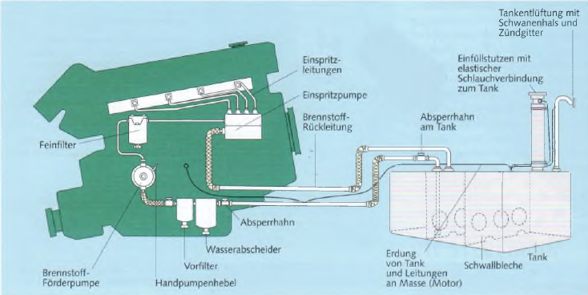
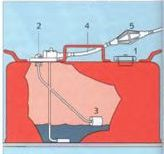

Da auslaufendes Benzin in Verbindung mit Luft ein hochexplosives Gemisch bildet, sind an Tankanlagen hohe Sicherheitsanforderungen zu stellen.
► Der Tank sollte sich in einem abgeschotteten Bootsteil befinden, damit sich der Treibstoff bei einem Leck nicht im gesamten Boot verteilt. Der Tank muss so sicher eingebaut sein, dass er sich bei heftigen Schiffsbewegungen, die besonders bei schnellen Gleitbooten auftreten, nicht losreißen kann. Direkt am Tank muss ein Absperrhahn sitzen, damit bei einem Bruch in der Leitung der Treibstoff nicht in die Bilge läuft. Auch wenn der Motor nicht benutzt wird, sollte der Absperrhahn geschlossen werden.
► Die Einfüllöffnung an Deck muss ringsum absolut dicht sein, damit übergelaufener Kraftstoff nicht unter Deck fließen kann.
► Die Tankentlüftung muss so nach außenbords geführt sein, dass dort entweichende Gase nicht ins Boot gelangen können. Sie sollte möglichst ein Zündgitter (Flammenschutz) haben.
► Die gesamte Tankanlage, einschließlich Einfüllstutzen, muss geerdet sein.

Außenbordertanks – sie fassen 12 oder 25 Liter.
Dieseltanks dürfen nie ganz leer gefahren werden, weil sonst Luft angesaugt wird, die den Motor zum Stehen bringt. Die Entlüftung der Anlage ist zeitraubend und schwierig.
Außenbordertanks sind transportabel. Ein Bajonettverschluss verbindet die flexible Schlauchleitung mit dem Motor. Mit einem Gummiball wird vorm Anlassen ein Benzin-Öl-Gemisch vom Tank in den Vergaser gepumpt. Der Tank muss unbedingt rutschfest und kippsicher gehaltert werden. Die meisten Außenbordertanks haben eine Entlüftungsschraube. Sie muss vor dem Anlassen geöffnet und wieder zugedreht werden, wenn der Motor längere Zeit abgestellt bleibt. Einige Tanks haben eine Entlüftungsautomatik.
Die meisten Explosionsunfälle geschehen unmittelbar nach dem Tanken, weil sich im Boot Benzindämpfe gebildet hatten. Deshalb beim Betanken:
► Fenster und Luken dicht.
► Motor aus, nicht rauchen, keine elektrischen Schalter betätigen.
► Nicht von oder an Bord gehen.
► Metallischen Kontakt zwischen Tankpistole und Einfüllstutzen herstellen.
Nach dem Tanken:
► Luken und Fenster auf.
► Verschütteten Treibstoff aufwischen.
► Einige Minuten lang das Lüftergebläse im Motorraum laufen lassen (sollte vor jedem Start der Maschine geschehen).
► Außenbordertanks wegen der Benzindämpfe nie an Bord füllen oder umfüllen.
Ist einmal Benzin in die Bilge gelaufen, mit Lappen oder mechanischer Lenzpumpe aufnehmen und anschließend die Bilge mit Wasser durchspülen.